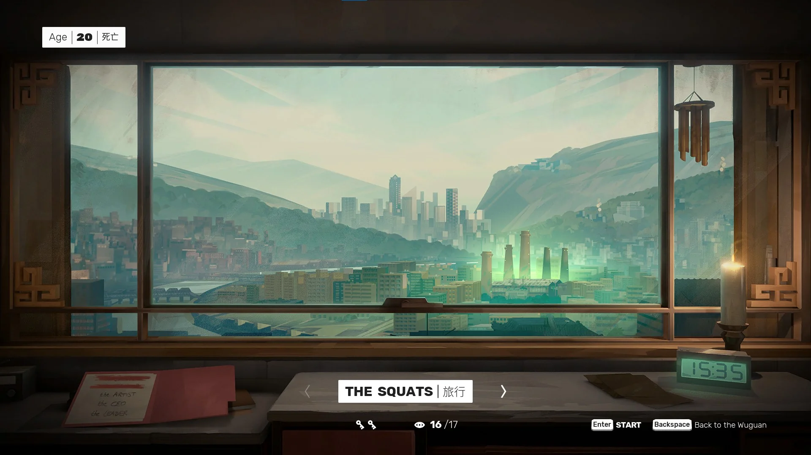

Getting In
Fence
Vaulting over the fence to your right you will come across two guards, these are the enemy types you will be seeing the most of throughout the rest of your time with the game, it is worth noting that these types are completely susceptible to the sweep command attack. Rush down the first guard so they do not have an opportunity to stack against you and quickly deal with the second one.
Left or Right?
Here you are greeted with two options. I would recommend that you take the path on the left for your first time as this would lead to one of the items on your board. Continue straight until you find a locked door and interact with the lovely note left on it. Interact with the door after. Keep these in mind as you play.
Taking the Stairs
Before heading up the stairs, you may head to the room adjacent to the stairs. Here you’ll find weapons you can pick up; it is recommended to pick up the pipe as this would make clearing the building simpler. You may now head up the stairs and deal with everyone on each floor, the game does ease you in with spreading them out into groups of 2 at the most. It is worth noting that rushing them down before they have a chance to react will instantly stun them for a takedown.
Junkies
Taking out these 2, walk into the room and interact with the junkie lying down to get another board item.
Leap of Faith
At the top of the building, you’ll find a pile of boards conveniently placed leading to the adjacent building, run out the window and jump into the next building. As you land you will find a room with three enemies, it is recommended to deal with the guy on the left close to the counter first.
Purple Mist
From here go to the kitchen area where you’ll find and interact with a sack of purple mist.
Oldboy
Before continuing, I’d recommend grabbing a bottle. Behind this door is the most iconic part of Sifu, an homage to the movie Oldboy. Slowly approach them until a dialogue option pops up, choose the one that you like the most. Right before you could finish your dialogue you can choose to throw the bottle and that would instantly stun the guy nearest to you for a free takedown. For the rest of this section, try to knock down the enemies holding on to pipes so you can grab a hold of their weapons; that would make it easier to get through the hallway.
Phone Call
At the end of the hallway is the door out of this area. Follow the stairs up, open the door, and go down the next hallway. From here it is recommended to take the first door to your left where you will find two enemies. Be aware that one not sitting on the couch may grab a bottle and throw it at you so be attentive to the sound cue.
Hallway
After dealing with them, you can grab the broom found in that room and head back to the hallway. Enter the door to your right and rush down the enemy that has his back turned towards you for another free takedown. Beat the other enemy that jumps in through the window.
First Miniboss
There are several options to continue from here but all would lead you to an open area with multiple enemies. Be aware of the one that has a bottle that would instantly throw it at you once you’re spotted. In here you would be introduced to your first instance of “powered up” enemies/mini bosses, these are enemies that would fight back against the first takedown attempt done to them and are outlined with a glowing effect; they are significantly harder to beat than their previous non “powered up” counterparts as they have access to special attacks that quickly drain your structure and can deal a lot of damage.
First Shrine
Opening the door you will see your first shrine, here you can choose any skills or perks you want. It is entirely up to your personal playstyle which one you’d like to choose, but my recommendations are outlined
here.
After, climb the wall and deal with the three enemies on the rooftop. You could throw them off to instantly deal with them.
We're In!
Juggernaut
As you jump in through the broken roof, you will be introduced to another enemy type called the “Juggernaut”. Avoid his grab and take him down. Run to the desk next to the couch he was previously sitting on the get the next item for your board.
Bathroom
Run out the door and head down the elevator shaft on your left, on the first door to your right you will find an enemy distracted, attack him and get another free takedown. Go down towards the hallway after.
Money Room
You will see a large room with numerous enemies. It is a fairly open space so reposition if you need to. Wait for the dialogue to finish and go down to the hallway on your left, attack the guy as his back is turned towards you and get an instant takedown. There’s also a pipe located on the table if you need a weapon. Note that there is a chance to trigger another mini boss in this room so be aware of that when performing takedowns. After clearing the room, head back to the first room you entered go to the edge of the table for the next board item.
Second Shrine
Before leaving the area, you could pick up a pipe. At the end of this hall, you will find a locked metal gate, turn back and go through the door on your right. In here are two mini bosses, having a weapon here would make the fight more manageable. Focus on dealing with one of them at a time. After beating them you will automatically find a bunch of keys and another shrine.
Almost There
Being Stealthy
Go back through the hallway and use the keys on the locked metal gate. Going through the next door you will find a lot of enemies in the warehouse. There are several you can take out without having to alert the rest of them. Take down the first enemy walking up the stairs in front of you, go down the stairs where she came from and take down the one distracted with a phone, go back up the stairs and head to the walkway on your left and sneak behind the one with her back turned towards you, and then go all the way back until you reach the door you came from. Go to the right and vault over the pile of boxes, hug the railing on the right as you hop down and spam your attack buttons. If done perfectly you would take out all four without alerting the rest of the warehouse.
Clearing the Warehouse
From here, drop down to an opening in the railings behind you, try to grab the attention of the rest as you make your way back up the stairs. From here, you will fight everyone else. Knocking enemies back down the stairs will deal a lot of structure damage and throwing them off the railings would also take them out instantly. Be aware that a mini boss can be triggered here. After, go down to the warehouse floor and interact with the table with a flower on it.
Last Room
Grab any weapon still left in the area and head down to the door. Choose any dialogue option, and again throw your weapon right before it ends to get another free takedown.
Last Shrine
Go through the door and that’s it! You’ve gone through the first part of “The Squats”, only thing left is The Botanist. Don’t forget to interact with the shrine on your way there!
Looking at your board now you will see that there are other items that we technically didn’t have to specifically interact with as these are mandatory board items.
Looking at your board now you will see that there are other items that we technically didn’t have to specifically interact with as these are mandatory board items.